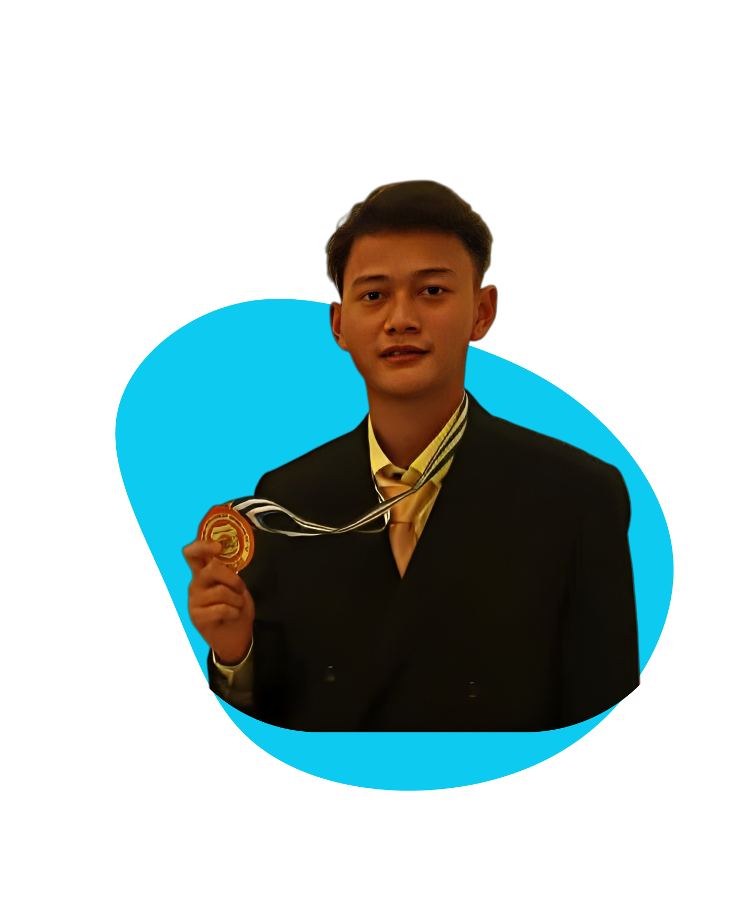
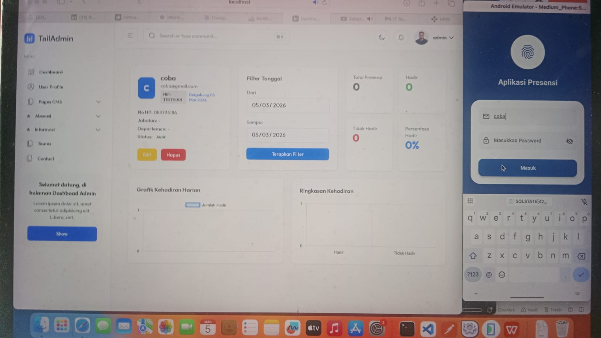

Hi, I am a Software Developer
🔥

MySQL

Get to know me a little better
Hi, saya Rizqi Arief Wicaksono, Mahasiswa Teknik Informatika dengan pengalaman profesional di Frontend Development, PHP Development, IT Support, dan Engineer Onsite. Saya memiliki kemampuan dalam analisis kebutuhan aplikasi, pengembangan web, serta pengelolaan proses deployment berbasis container. Terbiasa bekerja dalam tim, adaptif terhadap teknologi baru, dan memiliki kemampuan problem solving yang baik.
Saya juga tertarik dengan 3D desain dan pemrograman, khususnya sebagai Fullstack Developer. Saya mengembangkan situs web menggunakan HTML, CSS, JavaScript, dan beberapa framework PHP, selalu belajar, serta meningkatkan keterampilan melalui setiap proyek. Saya berdedikasi, pantang menyerah, dan bersemangat mengejar mimpi besar sambil menjadi versi terbaik dari diri saya.
Academic background in Information Systems and Software Engineering
Saat ini sedang menempuh pendidikan sarjana di bidang Informatika Terapan dengan fokus pada teknologi Jaringan, Cyber Security, dan pengembangan perangkat lunak modern.
Sedang MenempuhLulusan Rekayasa Perangkat Lunak, dengan dasar yang kuat dalam pemrograman dan pengembangan web.
LulusTechnologies and methodologies I work with daily
Professional journey across fintech, SaaS, and enterprise solutions
Real-world applications with measurable impact

Laravel · Flutter · REST API · MySQL
A full-stack integrated system consisting of two interconnected platforms. The Company Profile CMS is built with Laravel, enabling admins to manage all website content dynamically — hero, about, services, team, portfolio, and contact sections — through a clean dashboard with role-based access, image management, and SEO configuration. The Attendance App combines a Flutter mobile application with a Laravel backend, allowing employees to check in/out via GPS location validation and face recognition, while HR admins monitor logs, manage schedules, handle leave requests, and export attendance reports in PDF/Excel format — all synced in real-time through a REST API.
Continuous learning and professional development
I'm always open to discussing new projects, creative ideas, or opportunities to be part of your visions.